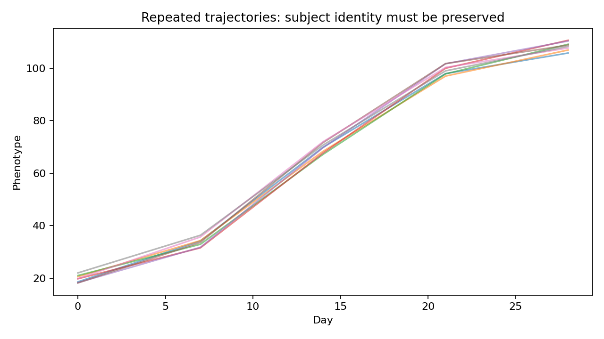

OmniPhenoR Repeated Measures: Mixed Models for Longitudinal Phenotypes
Source:vignettes/v26-repeated-measures.Rmd
v26-repeated-measures.RmdPurpose
Repeated phenotyping produces correlated observations within plants
or plots. Mixed-effects models provide one principled framework for
grouped and longitudinal data (Pinheiro and Bates 2000).
Generalized estimating equations offer another population-averaged
framework (Liang and
Zeger 1986), although OmniPhenoR 0.4.0 initially focuses its
integrated API on Gaussian repeated-trait models with nlme,
lme4, and an explicit lm fallback.

1. Experimental structure first
d <- subset(pheno_data("growth_series"), trait == "leaf_area")
with(d, table(treatment, block))
#> block
#> treatment 1 2 3 4
#> control 5 5 5 5
#> drought 5 5 5 5
#> nitrogen 5 5 5 5
length(unique(d$plant_id))
#> [1] 12The subject is plant_id. The repeated rows are
observations on those subjects, not additional replicates.
2. Portable fixed-subject fallback
m_lm <- pheno_repeated(
d,
response = "value",
time = "day",
treatment = "treatment",
subject = "plant_id",
block = "block",
engine = "lm"
)
m_lm
#> <pheno_repeated_fit> lm
#> correlation: independence
#> response: value time: day subject: plant_idThe lm route is primarily a portable teaching and
fallback path. It includes the subject as a fixed factor and assumes
independent residuals.
3. Random intercept and slope with nlme
m_ar1 <- pheno_repeated(
d,
"value",
"day",
"treatment",
"plant_id",
block = "block",
engine = "nlme",
correlation = "ar1",
random_slope = TRUE
)The random slope allows subjects to differ in temporal response. Whether that structure is estimable depends on the number and spacing of observations.
4. Correlation structures are model assumptions
pheno_correlation_structures()
#> # A tibble: 6 × 4
#> name engine nlme_class description
#> <chr> <chr> <chr> <chr>
#> 1 independence lm/nlme NA no residual correlation
#> 2 compound_symmetry nlme corCompSymm constant within-subject correlation
#> 3 ar1 nlme corAR1 discrete AR(1)
#> 4 car1 nlme corCAR1 continuous AR(1)
#> 5 gaussian nlme corGaus Gaussian spatial/temporal correlation
#> 6 exponential nlme corExp exponential correlationThe available nlme structures include compound symmetry,
discrete AR(1), continuous AR(1), Gaussian, and exponential correlation.
Irregular time spacing often motivates continuous-time structures rather
than discrete AR(1).
5. Compare candidate structures
m_ind <- pheno_repeated(d,"value","day","treatment","plant_id",
engine="nlme",correlation="independence",method="ML")
m_car <- pheno_repeated(d,"value","day","treatment","plant_id",
engine="nlme",correlation="car1",method="ML")
pheno_repeated_compare(m_ind,m_car)AIC/BIC comparisons are useful but should be combined with residual diagnostics, biological plausibility, convergence, and sensitivity.
6. lme4 as another mixed-model engine
m_lme4 <- pheno_repeated(
d,"value","day","treatment","plant_id",
engine="lme4",
correlation="independence"
)lme4 does not provide the same residual-correlation
structures as nlme. OmniPhenoR therefore warns rather than
silently pretending that an AR(1) request was honored.
7. Contrasts at agronomically meaningful times
ct <- pheno_time_contrasts(
d,
response = "value",
time = "day",
treatment = "treatment",
at = c(14, 28),
method = "observed"
)
ct$means
#> # A tibble: 6 × 3
#> treatment mean time
#> <chr> <dbl> <dbl>
#> 1 control 70.0 14
#> 2 drought 65.9 14
#> 3 nitrogen 75.4 14
#> 4 control 115. 28
#> 5 drought 105. 28
#> 6 nitrogen 121. 28
ct$contrasts
#> # A tibble: 6 × 3
#> time contrast difference
#> <dbl> <chr> <dbl>
#> 1 14 control - drought 4.11
#> 2 14 control - nitrogen -5.39
#> 3 14 drought - nitrogen -9.50
#> 4 28 control - drought 9.96
#> 5 28 control - nitrogen -5.90
#> 6 28 drought - nitrogen -15.9The native route is descriptive. Model-based marginal means can be
requested through emmeans when the fitted model and
optional package are available.
pheno_time_contrasts(
m_ar1,
at = c(14, 28),
method = "emmeans",
adjust = "tukey"
)8. Whole-curve summaries are complementary
pheno_curve_compare(
d,
"value",
"day",
"treatment",
subject = "plant_id"
)
#> # A tibble: 12 × 5
#> series auc peak time_peak max_slope
#> <chr> <dbl> <dbl> <dbl> <dbl>
#> 1 control.P01 1878. 117. 28 5.07
#> 2 control.P02 1878. 112. 28 5.53
#> 3 control.P03 1916. 115. 28 5.94
#> 4 control.P04 1921. 117. 28 5.59
#> 5 drought.P09 1754. 106. 28 4.92
#> 6 drought.P10 1774. 108. 28 5.34
#> 7 drought.P11 1719. 102. 28 5.47
#> 8 drought.P12 1768. 104. 28 5.47
#> 9 nitrogen.P05 1984. 121. 28 6.35
#> 10 nitrogen.P06 2051. 124. 28 5.80
#> 11 nitrogen.P07 2045. 120. 28 6.00
#> 12 nitrogen.P08 2036. 119. 28 6.16Time-specific contrasts answer whether groups differ at selected times. AUC and maximum-growth summaries answer integrated dynamic questions. Neither automatically replaces the other.
9. Diagnostics
pheno_model_diagnostics(m_lm)
#> $summary
#> # A tibble: 1 × 4
#> n mean_residual sd_residual cor_fitted_residual
#> <int> <dbl> <dbl> <dbl>
#> 1 60 -3.82e-16 7.29 4.40e-17
#>
#> $residuals
#> # A tibble: 60 × 2
#> fitted residual
#> <dbl> <dbl>
#> 1 12.8 1.74
#> 2 39.8 -5.76
#> 3 66.8 -0.104
#> 4 93.8 8.35
#> 5 121. -4.22
#> 6 12.4 3.26
#> 7 39.5 -8.83
#> 8 66.5 2.87
#> 9 93.5 10.7
#> 10 120. -8.05
#> # ℹ 50 more rowsFor a mixed model, inspect residual pattern over fitted values and time, residual autocorrelation, random-effects plausibility, heteroscedasticity, and influential subjects. If assumptions are poor, changing only the p-value correction is not a remedy.
10. Time as factor or continuous variable?
A continuous time term imposes a functional form. A factor-time model is more flexible but uses more degrees of freedom. Nonlinear growth or spline models may be more scientifically meaningful when the biological process is smooth and nonlinear. The choice should be made from the scientific question and sampling design.
11. Biological unit versus observation unit
If several leaves are measured within each plant at each date, the data hierarchy may be:
block / plot / plant / leaf / timeThe correct subject/random structure depends on the experimental unit and the level at which treatment was assigned. Image objects must not be promoted to independent replicates merely because the detector found many of them.
Reporting checklist
Report fixed effects, random structure, residual correlation, variance structure if used, estimation method (ML/REML), subject definition, time scale, missing-data handling, degrees-of-freedom/contrast method, multiplicity adjustment, convergence diagnostics, and sensitivity to reasonable alternative correlation structures.
Final perspective
The central benefit of repeated-measures modeling is not simply a different standard error. It is an explicit representation of the fact that observations from the same biological subject are connected through time.
Extended worked interpretation
Consider a randomized-block experiment in which each plant is imaged five times. The treatment replication is determined by the randomized units, not by the 5-fold increase in rows after imaging. A model with subject effects preserves this structure; a simple treatment-by-day ANOVA on all rows without subject dependence typically produces overconfident standard errors.
Residual correlation and random slopes answer different questions. A random slope allows plants to differ in their temporal trend. AR(1) says residual deviations closer in time are more correlated. Depending on the data, both may be needed, one may be enough, or neither may be supported. The correct structure should be justified with design knowledge and diagnostics, not selected solely from the smallest AIC among a very large menu.
For teaching, compare fitted means with the raw individual
trajectories. A model can have a convincing treatment-time interaction
while the visual pattern is driven by one or two subjects. This is why
pheno_plot_series() and
pheno_model_diagnostics() belong in the same workflow as
formal contrasts.